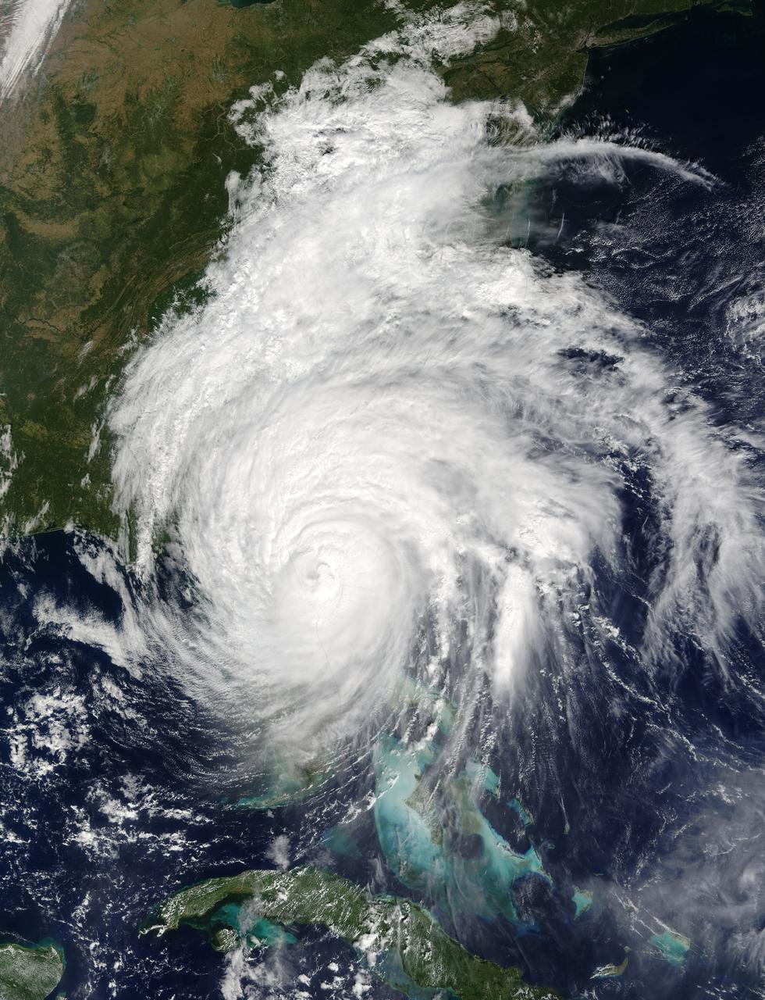

PART 1: Causes for a Hurricane |
|||
|---|---|---|---|
How Does a Hurricane Form?Hurricanes require a few key factors to become the storm that they are. Huricanes need warm waters where the oceans are at LEAST 80°F or 25°C to form. Due to this they tend to form around the equator and the tropics. These warm waters evaporate putting moisture in the air, which is another key component to a hurricane as the moisture is the fuel of the hurricane. They also need winds, the winds cause the warm water to rise and cool higher into the atmosphere. They then form clouds, The winds then begin to blow in a circular pattern around a center of the storm. Once the winds are at least 74 MPH it is considered a hurricane.(1) |
 | ||
When do hurricanes form most?Hurricanes tend to form around September and generally summer/hotter months (2). This is due to the atmospheric requirements for a hurricane to form. The hurricane's fuel is heat energy that creates moisture in the air (3), which is why it thrives in hotter months such as the ones during the summer. And is also why these storms normally only form around the equator. |
|||
PART 2: How Hurricanes are Predicted |
|||
Ways Scientists Predict Hurricanes
Scientists are able to predict hurricanes soon enough for a proper warning to be put into place. A commonly used scale is called the "Saffir-Simpson Category" a scale that ranges from 1-5, 1 being the least powerful and 5 being the most.A main issue that scientists tend to have however is the fact that they cannot predict how fast the hurricane will change it's severity(5). For example, in 2019 hurricane Dorian was thought to only be a tropical storm, then it had transformed into a level 5 hurricane within only 2 days(5). In every decade there are around 17 storms, 6 of them being major(6). Between 1851 to 2004 there were 273 recorded hurricanes(6). (4) How Does nasa study hurricanes? gpm.nasa.gov (5) Scientists Are Getting Better at Predicting Hurricane Intensity YaleEnvironment360 (6) U.S. Hurricane Strikes By Decade NOAA.gov |
|||
PART 3: How to Survive A Hurricane |
|||
If you live in an area that happens to be in a common path of a Hurricane. You should most likely :
|
|||